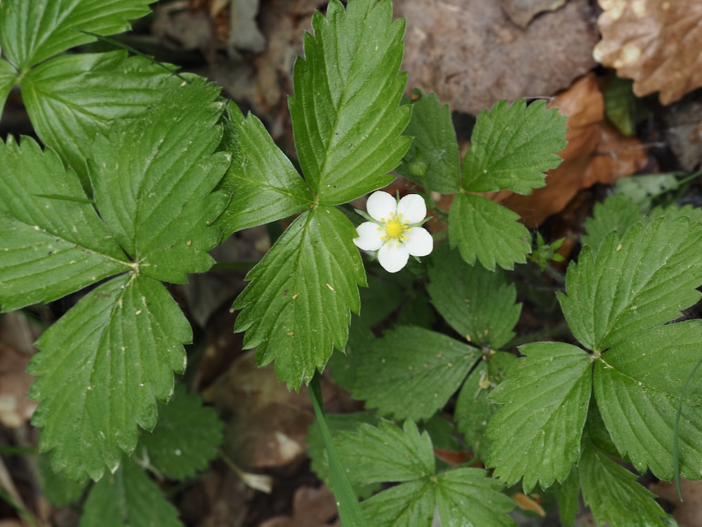

Die Mutter aller Erdbeeren
Die Wald-Erdbeere ist die Stammform aller heutigen Garten-Erdbeeren. Sie ist viel kleiner (Frucht 1–2 cm statt 5 cm), aber dafür intensiver im Geschmack: süß, aromatisch, mit einem Hauch von Vanille und Honig, den moderne Zucht-Erdbeeren oft verlieren. Wer einmal eine richtig reife Wald-Erdbeere isst, versteht, warum sie seit Jahrtausenden als Delikatesse gilt.
Aroma-Geheimnis
Im 18. Jahrhundert wurde die Wald-Erdbeere mit der größeren amerikanischen Ananas-Erdbeere gekreuzt — daraus entstanden die heutigen Garten-Sorten. Aber: Bei der Auslese auf Größe und Lagerfähigkeit ging das intensive Aroma verloren. Forschung versucht heute, das alte Wald-Erdbeer-Aroma zurück in moderne Sorten zu züchten. Die Wild-Form bleibt der unangefochtene Geschmackssieger.